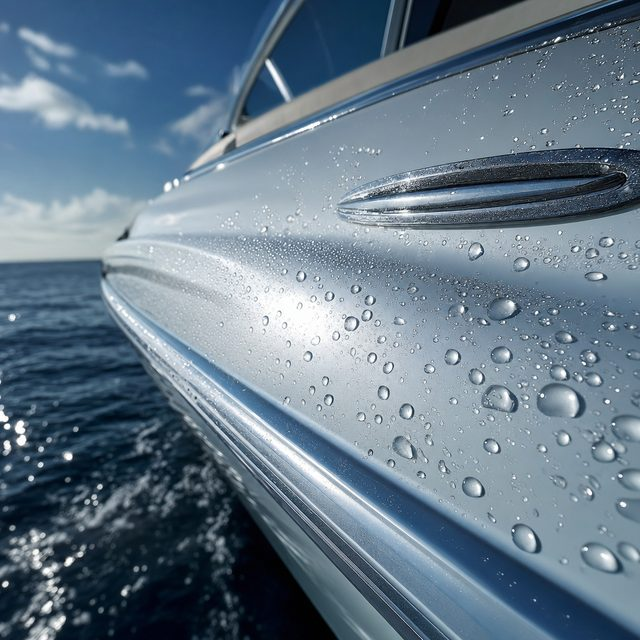
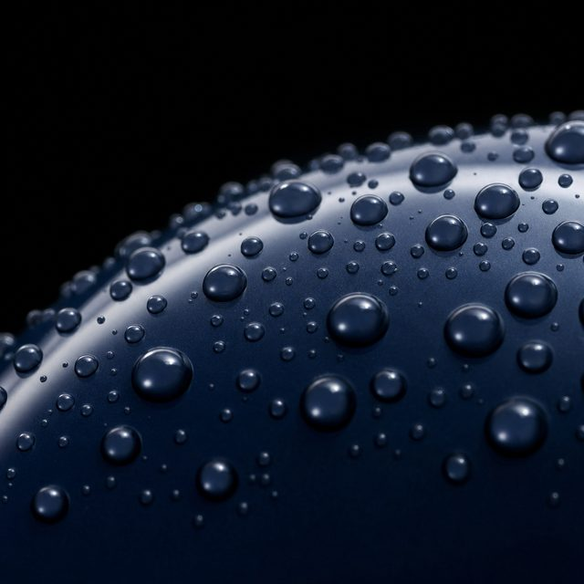

Marine Ceramic Coating
Marine ceramic graphene coating.
A nano ceramic graphene layer bonded to your gelcoat or paint — engineered to help reduce oxidation, repel salt and water, and hold a deep gloss for 12–24 months.

What it is
Engineered protection, not a quick shine.
Marine ceramic coating is a liquid nano-ceramic that cures into a hard, semi-permanent layer chemically bonded to your surface. Our graphene-enhanced formula adds hardness and heat dissipation, formulated for saltwater and Egypt’s year-round UV load.
It is not wax, and it is not a coating you reapply each month. It is a protective surface that helps reduce oxidation, sheds water and contaminants, and makes routine maintenance noticeably easier.

How it works
The process.
Inspect & read the surface
We assess gelcoat condition and grade the oxidation level before quoting anything.
Correct
Gelcoat correction removes oxidation and restores gloss — protection only performs on a corrected surface.
Decontaminate & prep
Full decontamination and panel wipe so the coating bonds cleanly.
Apply & cure
Controlled layers applied and cured in measured conditions for an even, durable finish.
Final inspection & care
We inspect under light and hand over a simple maintenance guide.
What's included
In every marine ceramic coating engagement.
A clear scope, a marine-grade standard, and honest expectations set at inspection.
- Surface inspection & oxidation reading
- Gelcoat correction as required
- Full salt & contaminant decontamination
- Nano ceramic graphene application
- Hydrophobic, UV-resistant top layer
- Care kit & maintenance guidance
Lifespan & expectations
What to expect.
Real-world lifespan depends on use, berth and maintenance. We quote 12–24 months for ceramic graphene — and never more than the surface will honestly hold.
Who it's for
Condition fit.
Multi-season gloss
Owners who want one to two seasons of depth and hydrophobics with reduced maintenance.
A corrected surface
Performs best after gelcoat correction; we will tell you honestly if correction is needed first.
PPF on impact zones
Add 10-mil PPF to high-wear areas for a complete protection system.
Questions
Marine Ceramic Coating FAQ.
No — nothing is scratch-proof, and we never claim it. Ceramic graphene adds hardness and helps resist swirls, etching and chemical staining. For impact and abrasion zones we recommend 10-mil marine PPF.
We quote 12–24 months depending on how the vessel is used, where it is berthed and how it is maintained. We give you exact expectations at inspection, never a rounded-up promise.
It lasts far longer and bonds to the surface. Wax is measured in weeks to a few months; ceramic graphene is measured in 12–24 months, with stronger hydrophobics and UV resistance.
Yes. We offer complementary coatings for metals and glass as part of a full protection plan — ask during your inspection.
Book an inspection
Start with an inspection.
Free and consultative. We read your vessel's surface, grade the oxidation, and recommend the right layer — no pressure.